CoreDash Live Earthสถานการณ์จริงจากดาวเทียม · ระบุที่มาทุกภาพ
--:--:--–
🏠หน้าหลัก

หน้านี้แสดง ข้อมูลจริง ที่เบราว์เซอร์ของท่านดึงตรงจากหน่วยงานที่เปิดข้อมูลให้ประชาชน เช่น NASA, หน่วยงานอุตุนิยมวิทยาญี่ปุ่น (ดาวเทียม Himawari-9), USGS และ Copernicus